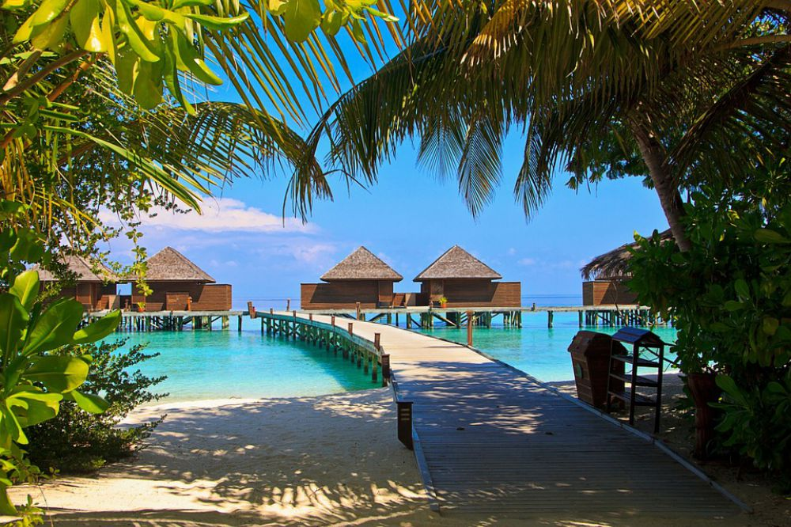
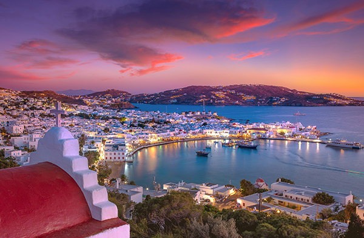
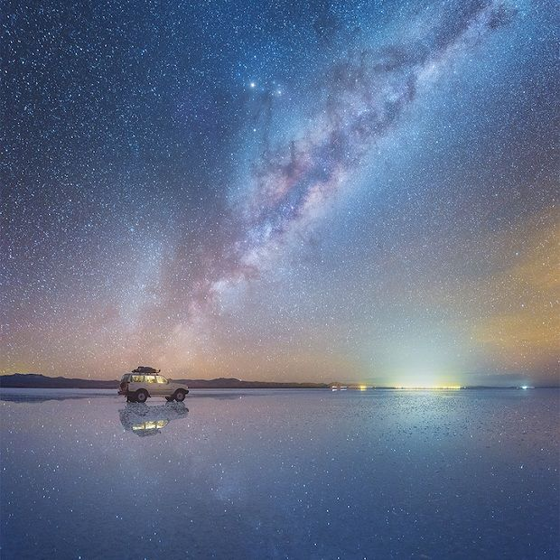
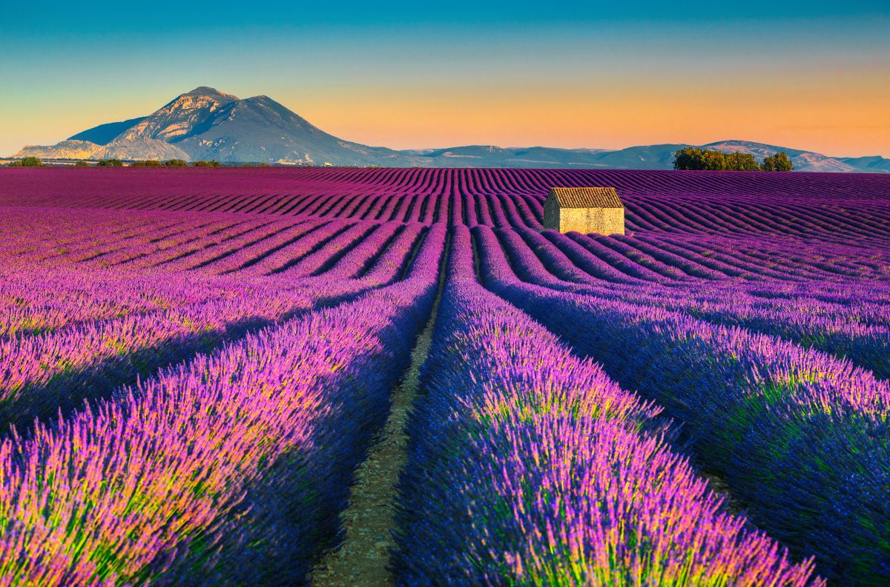
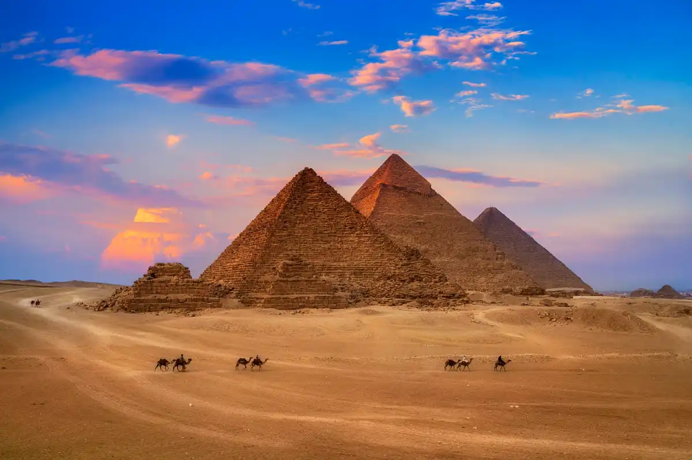
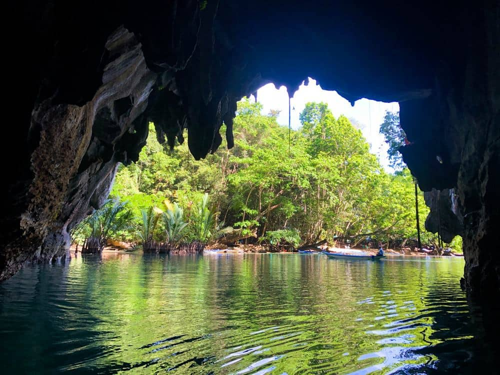

10 DESTINOS DE TIRAR O FÔLEGO
1. Ilhas Maldivas – República das Maldivas

Com pouco mais de mil ilhas, das quais cerca de 200 são habitadas, as Maldivas são um destino paradisíaco. Cercado por água azul-turquesa e areia branquinha, o arquipélago é um daqueles destinos onde mirar a câmera em qualquer ângulo é garantia de fotos
lindas. Porém, uma das suas marcas registradas são os bangalôs que se debruçam sobre o mar.
Afinal, onde ficam as Ilhas Maldivas? Ilhas Maldivas: um país que parece uma pintura de tão belo! Essa maravilha localiza-se no Oceano Índico, situado a sudoeste da Índia e do Sri Lanka e ao sul do continente asiático.
2. Lençóis Maranhenses – Brasil/Maranhão

As dunas e as lagoas de água doce, formadas naturalmente pelos ventos e pelas condições geográficas, estão divididas entre os municípios de Barreirinha, Primeira Cruz e Santo Amaro do Maranhão. A região ainda conta com o Rio Preguiças, a famosa Lagoa
Azul e a Tenda dos Macacos, verdadeiros cartões-postais brasileiros.
Lençóis Maranhenses: um oásis verde-amarelo. O Parque Nacional dos Lençóis Maranhenses ocupa uma área de 155 mil hectares e é considerado o maior parque de dunas do Brasil.
Certamente passeios imperdíveis para quem vai aos Lençóis Maranhenses.
3. Monte Roraima- Brasil

Na tríplice fronteira entre Brasil, Venezuela e Guiana, o Monte Roraima é o lugar certo para os apaixonados por aventura e fotografia. Com uma paisagem natural grandiosa, a região serviu de inspiração para a animação “Up – Altas Aventuras”, sabia? Pois
é!
Seus 2,8 mil metros de altura atraem todos os anos os visitantes mais corajosos, que se dispõem a percorrer suas trilhas até o topo.O Monte Roraima é uma das montanhas mais misteriosas e desejadas do montanhismo brasileiro.
Na verdade trata-se de um Tepui, ou seja,
uma montanha em formato de mesa que abriga paisagens de grande beleza cênica, caminhadas longas e prazerosas, diversos atrativos naturais e muitas lendas e histórias.
4. Mykonos- Grécia

Se na sua lista de o que fazer em Mykonos consta (muita) festa na praia, a Paradise Beach é o seu lugar. Afinal, não só os bares e restaurantes tocam música o dia todo,
como também funciona ali o clube mais famoso da ilha: Cavo Paradiso. A programação do Cavo Paradiso apresenta DJs conhecido mundialmente.2
5. Salar de Uyuni

Além da extração de sal, o Salar de Uyuni é também um importante destino turístico. No período de chuvas, o Salar se assemelha a um enorme espelho que se confunde no horizonte com o céu. Assim os passeios ficam restritos a algumas áreas.
Entretanto, entre abril e novembro todo o deserto de sal fica acessível, pois torna-se um imenso deserto seco com uma paisagem ainda mais exótica.[carece de fontes] Além do deserto de sal, as ilhas e as lagoas coloridas
onde se vê os flamingos, é possível num mesmo percurso conhecer lagoas de águas termais, sendo uma delas formada de piscinas e a outra natural.
6. Campos de lavanda
Se o propósito da sua viagem à Provence é ver os campos de lavanda floridos, vá em julho, quando as flores ficam bem roxas.
No entanto, é preciso ter cuidado com a data da colheita, que pode acontecer entre o fim de julho e o início de agosto- depois disso, as folhas desaparecem.
7. Pirâmides de Gizé- Egito
As Pirâmides de Gizé são tumbas construídas para três dos faraós do Egito. Os antigos egípcios acreditavam que, quando os faraós morressem, eles seguiriam para a vida após a morte como deuses. Esses faraós se prepararam para a vida após a morte, ordenando a construção de enormes tumbas em pirâmide para eles, onde poderiam armazenar todos os itens de que precisariam no outro mundo.
8. Lago de Peyto-Canadá

O Lago Peyto, no Canadá, foi escolhido como o lugar mais bonito do planeta. Com água cristalina azul-turquesa alimentada pelas geleiras no alto das grandiosas Montanhosas Rochosas, este lago é o perfeito cenário de um maravilhoso cartão postal. O contraste entre a cor do lago e a floresta verde escuro na base das grandiosas montanhas nevadas tornam este lugar, no Parque Nacional de Banff, um dos destinos naturais mais procurados pelos turistas no Canadá. Um mirante panorâmico permite observá-lo lá do alto, perfeito para fotos inesquecíveis.
9. Rio Subterrâneo Puerto Princesa – Filipinas
Patrimônio Mundial da Unesco, o rio subterrâneo fica em um parque nacional a 80 km de Puerto Princesa, nas Filipinas. São ao todo 8 km de extensão navegando por águas cristalinas e incríveis formas rochosas nas cavernas. Uma experiência única. O Parque Nacional do Rio Subterrâneo de Puerto Princesa está localizado na Cordilheira de Saint Paul, na costa oeste da ilha, e recentemente foi escolhido como uma das Sete Maravilhas do mundo, na versão natureza.
10. Aurora Boreal- Islândia

Bem ao norte do Hemisfério Norte, no meio do Oceano, fica esta ilha distante, terra de um dos mais belos fenômenos da natureza. A aurora boreal, este conjunto de luzes intensas, coloridas e que se movimentam no céu, pode ser avistada o ano todo na Islândia, mas a melhor época é de abril a setembro. O fenômeno pode ser visto em outros países, mas nesta ilha nórdica com a mistura de neve e terreno acidentado avistar estas cores no céu fica muito mais incrível.